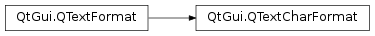

QTextCharFormat¶
Inherited by: QTextImageFormat, QTextTableCellFormat
Synopsis¶
Functions¶
- def
anchorHref() - def
anchorName() - def
anchorNames() - def
font() - def
fontCapitalization() - def
fontFamily() - def
fontFixedPitch() - def
fontHintingPreference() - def
fontItalic() - def
fontKerning() - def
fontLetterSpacing() - def
fontLetterSpacingType() - def
fontOverline() - def
fontPointSize() - def
fontStretch() - def
fontStrikeOut() - def
fontStyleHint() - def
fontStyleStrategy() - def
fontUnderline() - def
fontWeight() - def
fontWordSpacing() - def
isAnchor() - def
setAnchor(anchor) - def
setAnchorHref(value) - def
setAnchorName(name) - def
setAnchorNames(names) - def
setFont(font) - def
setFont(font, behavior) - def
setFontCapitalization(capitalization) - def
setFontFamily(family) - def
setFontFixedPitch(fixedPitch) - def
setFontHintingPreference(hintingPreference) - def
setFontItalic(italic) - def
setFontKerning(enable) - def
setFontLetterSpacing(spacing) - def
setFontLetterSpacingType(letterSpacingType) - def
setFontOverline(overline) - def
setFontPointSize(size) - def
setFontStretch(factor) - def
setFontStrikeOut(strikeOut) - def
setFontStyleHint(hint[, strategy=QFont.PreferDefault]) - def
setFontStyleStrategy(strategy) - def
setFontUnderline(underline) - def
setFontWeight(weight) - def
setFontWordSpacing(spacing) - def
setTableCellColumnSpan(tableCellColumnSpan) - def
setTableCellRowSpan(tableCellRowSpan) - def
setTextOutline(pen) - def
setToolTip(tip) - def
setUnderlineColor(color) - def
setUnderlineStyle(style) - def
setVerticalAlignment(alignment) - def
tableCellColumnSpan() - def
tableCellRowSpan() - def
textOutline() - def
toolTip() - def
underlineColor() - def
underlineStyle() - def
verticalAlignment()
Detailed Description¶
The
PySide2.QtGui.QTextCharFormatclass provides formatting information for characters in aPySide2.QtGui.QTextDocument.The character format of text in a document specifies the visual properties of the text, as well as information about its role in a hypertext document.
The font used can be set by supplying a font to the
PySide2.QtGui.QTextCharFormat.setFont()function, and each aspect of its appearance can be adjusted to give the desired effect.PySide2.QtGui.QTextCharFormat.setFontFamily()andPySide2.QtGui.QTextCharFormat.setFontPointSize()define the font’s family (e.g. Times) and printed size;PySide2.QtGui.QTextCharFormat.setFontWeight()andPySide2.QtGui.QTextCharFormat.setFontItalic()provide control over the style of the font.PySide2.QtGui.QTextCharFormat.setFontUnderline(),PySide2.QtGui.QTextCharFormat.setFontOverline(),PySide2.QtGui.QTextCharFormat.setFontStrikeOut(), andPySide2.QtGui.QTextCharFormat.setFontFixedPitch()provide additional effects for text.The color is set with
PySide2.QtGui.QTextFormat.setForeground(). If the text is intended to be used as an anchor (for hyperlinks), this can be enabled withPySide2.QtGui.QTextCharFormat.setAnchor(). ThePySide2.QtGui.QTextCharFormat.setAnchorHref()andPySide2.QtGui.QTextCharFormat.setAnchorNames()functions are used to specify the information about the hyperlink’s destination and the anchor’s name.
-
class
PySide2.QtGui.QTextCharFormat¶ -
class
PySide2.QtGui.QTextCharFormat(QTextCharFormat) -
class
PySide2.QtGui.QTextCharFormat(fmt) Parameters: - QTextCharFormat –
PySide2.QtGui.QTextCharFormat - fmt –
PySide2.QtGui.QTextFormat
Constructs a new character format object.
Creates a new character format with the same attributes as the
giventext format.- QTextCharFormat –
-
PySide2.QtGui.QTextCharFormat.VerticalAlignment¶ This enum describes the ways that adjacent characters can be vertically aligned.
Constant Description QTextCharFormat.AlignNormal Adjacent characters are positioned in the standard way for text in the writing system in use. QTextCharFormat.AlignSuperScript Characters are placed above the base line for normal text. QTextCharFormat.AlignSubScript Characters are placed below the base line for normal text. QTextCharFormat.AlignMiddle The center of the object is vertically aligned with the base line. Currently, this is only implemented for inline objects. QTextCharFormat.AlignBottom The bottom edge of the object is vertically aligned with the base line. QTextCharFormat.AlignTop The top edge of the object is vertically aligned with the base line. QTextCharFormat.AlignBaseline The base lines of the characters are aligned.
-
PySide2.QtGui.QTextCharFormat.UnderlineStyle¶ This enum describes the different ways drawing underlined text.
Constant Description QTextCharFormat.NoUnderline Text is draw without any underlining decoration. QTextCharFormat.SingleUnderline A line is drawn using Qt.SolidLine.QTextCharFormat.DashUnderline Dashes are drawn using Qt.DashLine.QTextCharFormat.DotLine Dots are drawn using Qt.DotLine;QTextCharFormat.DashDotLine Dashs and dots are drawn using Qt.DashDotLine.QTextCharFormat.DashDotDotLine Underlines draw drawn using Qt.DashDotDotLine.QTextCharFormat.WaveUnderline The text is underlined using a wave shaped line. QTextCharFormat.SpellCheckUnderline The underline is drawn depending on the SpellCheckUnderlineStyle theme hint of QPlatformTheme. By default this is mapped to , on macOS it is mapped to . See also
Qt.PenStyle
-
PySide2.QtGui.QTextCharFormat.FontPropertiesInheritanceBehavior¶ This enum specifies how the
PySide2.QtGui.QTextCharFormat.setFont()function should behave with respect to unset font properties.Constant Description QTextCharFormat.FontPropertiesSpecifiedOnly If a property is not explicitly set, do not change the text format’s property value. QTextCharFormat.FontPropertiesAll If a property is not explicitly set, override the text format’s property with a default value.
-
PySide2.QtGui.QTextCharFormat.anchorHref()¶ Return type: unicode Returns the text format’s hypertext link, or an empty string if none has been set.
-
PySide2.QtGui.QTextCharFormat.anchorName()¶ Return type: unicode This function is deprecated. Use
PySide2.QtGui.QTextCharFormat.anchorNames()instead.Returns the anchor name associated with this text format, or an empty string if none has been set. If the anchor name is set, text with this format can be the destination of a hypertext link.
-
PySide2.QtGui.QTextCharFormat.anchorNames()¶ Return type: list of strings Returns the anchor names associated with this text format, or an empty string list if none has been set. If the anchor names are set, text with this format can be the destination of a hypertext link.
-
PySide2.QtGui.QTextCharFormat.font()¶ Return type: PySide2.QtGui.QFontReturns the font for this character format.
-
PySide2.QtGui.QTextCharFormat.fontCapitalization()¶ Return type: PySide2.QtGui.QFont.CapitalizationReturns the current capitalization type of the font.
-
PySide2.QtGui.QTextCharFormat.fontFamily()¶ Return type: unicode Returns the text format’s font family.
-
PySide2.QtGui.QTextCharFormat.fontFixedPitch()¶ Return type: PySide2.QtCore.boolReturns
trueif the text format’s font is fixed pitch; otherwise returnsfalse.
-
PySide2.QtGui.QTextCharFormat.fontHintingPreference()¶ Return type: PySide2.QtGui.QFont.HintingPreferenceReturns the hinting preference set for this text format.
-
PySide2.QtGui.QTextCharFormat.fontItalic()¶ Return type: PySide2.QtCore.boolReturns
trueif the text format’s font is italic; otherwise returnsfalse.
-
PySide2.QtGui.QTextCharFormat.fontKerning()¶ Return type: PySide2.QtCore.boolReturns
trueif the font kerning is enabled.
-
PySide2.QtGui.QTextCharFormat.fontLetterSpacing()¶ Return type: PySide2.QtCore.qrealReturns the current letter spacing.
-
PySide2.QtGui.QTextCharFormat.fontLetterSpacingType()¶ Return type: PySide2.QtGui.QFont.SpacingTypeReturns the letter spacing type of this format..
-
PySide2.QtGui.QTextCharFormat.fontOverline()¶ Return type: PySide2.QtCore.boolReturns
trueif the text format’s font is overlined; otherwise returnsfalse.
-
PySide2.QtGui.QTextCharFormat.fontPointSize()¶ Return type: PySide2.QtCore.qrealReturns the font size used to display text in this format.
-
PySide2.QtGui.QTextCharFormat.fontStretch()¶ Return type: PySide2.QtCore.intReturns the current font stretching.
-
PySide2.QtGui.QTextCharFormat.fontStrikeOut()¶ Return type: PySide2.QtCore.boolReturns
trueif the text format’s font is struck out (has a horizontal line drawn through it); otherwise returnsfalse.
-
PySide2.QtGui.QTextCharFormat.fontStyleHint()¶ Return type: PySide2.QtGui.QFont.StyleHintReturns the font style hint.
-
PySide2.QtGui.QTextCharFormat.fontStyleStrategy()¶ Return type: PySide2.QtGui.QFont.StyleStrategyReturns the current font style strategy.
-
PySide2.QtGui.QTextCharFormat.fontUnderline()¶ Return type: PySide2.QtCore.boolReturns
trueif the text format’s font is underlined; otherwise returnsfalse.
-
PySide2.QtGui.QTextCharFormat.fontWeight()¶ Return type: PySide2.QtCore.intReturns the text format’s font weight.
See also
PySide2.QtGui.QTextCharFormat.setFontWeight()PySide2.QtGui.QTextCharFormat.font()QFont.Weight
-
PySide2.QtGui.QTextCharFormat.fontWordSpacing()¶ Return type: PySide2.QtCore.qrealReturns the current word spacing value.
-
PySide2.QtGui.QTextCharFormat.isAnchor()¶ Return type: PySide2.QtCore.boolReturns
trueif the text is formatted as an anchor; otherwise returnsfalse.
-
PySide2.QtGui.QTextCharFormat.setAnchor(anchor)¶ Parameters: anchor – PySide2.QtCore.boolIf
anchoris true, text with this format represents an anchor, and is formatted in the appropriate way; otherwise the text is formatted normally. (Anchors are hyperlinks which are often shown underlined and in a different color from plain text.)The way the text is rendered is independent of whether or not the format has a valid anchor defined. Use
PySide2.QtGui.QTextCharFormat.setAnchorHref(), and optionallyPySide2.QtGui.QTextCharFormat.setAnchorNames()to create a hypertext link.
-
PySide2.QtGui.QTextCharFormat.setAnchorHref(value)¶ Parameters: value – unicode Sets the hypertext link for the text format to the given
value. This is typically a URL like “http://example.com/index.html”.The anchor will be displayed with the
valueas its display text; if you want to display different text callPySide2.QtGui.QTextCharFormat.setAnchorNames().To format the text as a hypertext link use
PySide2.QtGui.QTextCharFormat.setAnchor().
-
PySide2.QtGui.QTextCharFormat.setAnchorName(name)¶ Parameters: name – unicode This function is deprecated. Use
PySide2.QtGui.QTextCharFormat.setAnchorNames()instead.Sets the text format’s anchor
name. For the anchor to work as a hyperlink, the destination must be set withPySide2.QtGui.QTextCharFormat.setAnchorHref()and the anchor must be enabled withPySide2.QtGui.QTextCharFormat.setAnchor().
-
PySide2.QtGui.QTextCharFormat.setAnchorNames(names)¶ Parameters: names – list of strings Sets the text format’s anchor
names. For the anchor to work as a hyperlink, the destination must be set withPySide2.QtGui.QTextCharFormat.setAnchorHref()and the anchor must be enabled withPySide2.QtGui.QTextCharFormat.setAnchor().
-
PySide2.QtGui.QTextCharFormat.setFont(font, behavior)¶ Parameters: Sets the text format’s
font.If
behaviorisQTextCharFormat.FontPropertiesAll, the font property that has not been explicitly set is treated like as it were set with default value; IfbehaviorisQTextCharFormat.FontPropertiesSpecifiedOnly, the font property that has not been explicitly set is ignored and the respective property value remains unchanged.See also
-
PySide2.QtGui.QTextCharFormat.setFont(font) Parameters: font – PySide2.QtGui.QFontThis is an overloaded function.
Sets the text format’s
font.See also
-
PySide2.QtGui.QTextCharFormat.setFontCapitalization(capitalization)¶ Parameters: capitalization – PySide2.QtGui.QFont.CapitalizationSets the capitalization of the text that apppears in this font to
capitalization.A font’s capitalization makes the text appear in the selected capitalization mode.
-
PySide2.QtGui.QTextCharFormat.setFontFamily(family)¶ Parameters: family – unicode Sets the text format’s font
family.
-
PySide2.QtGui.QTextCharFormat.setFontFixedPitch(fixedPitch)¶ Parameters: fixedPitch – PySide2.QtCore.boolIf
fixedPitchis true, sets the text format’s font to be fixed pitch; otherwise a non-fixed pitch font is used.
-
PySide2.QtGui.QTextCharFormat.setFontHintingPreference(hintingPreference)¶ Parameters: hintingPreference – PySide2.QtGui.QFont.HintingPreferenceSets the hinting preference of the text format’s font to be
hintingPreference.
-
PySide2.QtGui.QTextCharFormat.setFontItalic(italic)¶ Parameters: italic – PySide2.QtCore.boolIf
italicis true, sets the text format’s font to be italic; otherwise the font will be non-italic.
-
PySide2.QtGui.QTextCharFormat.setFontKerning(enable)¶ Parameters: enable – PySide2.QtCore.boolEnables kerning for this font if
enableis true; otherwise disables it.When kerning is enabled, glyph metrics do not add up anymore, even for Latin text. In other words, the assumption that width(‘a’) + width(‘b’) is equal to width(“ab”) is not neccesairly true.
-
PySide2.QtGui.QTextCharFormat.setFontLetterSpacing(spacing)¶ Parameters: spacing – PySide2.QtCore.qrealSets the letter spacing of this format to the given
spacing. The meaning of the value depends on the font letter spacing type.For percentage spacing a value of 100 indicates default spacing; a value of 200 doubles the amount of space a letter takes.
-
PySide2.QtGui.QTextCharFormat.setFontLetterSpacingType(letterSpacingType)¶ Parameters: letterSpacingType – PySide2.QtGui.QFont.SpacingTypeSets the letter spacing type of this format to
letterSpacingType.
-
PySide2.QtGui.QTextCharFormat.setFontOverline(overline)¶ Parameters: overline – PySide2.QtCore.boolIf
overlineis true, sets the text format’s font to be overlined; otherwise the font is displayed non-overlined.
-
PySide2.QtGui.QTextCharFormat.setFontPointSize(size)¶ Parameters: size – PySide2.QtCore.qrealSets the text format’s font
size.
-
PySide2.QtGui.QTextCharFormat.setFontStretch(factor)¶ Parameters: factor – PySide2.QtCore.intSets the stretch factor for the font to
factor.The stretch factor changes the width of all characters in the font by factor percent. For example, setting
factorto 150 results in all characters in the font being 1.5 times (ie. 150%) wider. The default stretch factor is 100. The minimum stretch factor is 1, and the maximum stretch factor is 4000.The stretch factor is only applied to outline fonts. The stretch factor is ignored for bitmap fonts.
-
PySide2.QtGui.QTextCharFormat.setFontStrikeOut(strikeOut)¶ Parameters: strikeOut – PySide2.QtCore.boolIf
strikeOutis true, sets the text format’s font with strike-out enabled (with a horizontal line through it); otherwise it is displayed without strikeout.
-
PySide2.QtGui.QTextCharFormat.setFontStyleHint(hint[, strategy=QFont.PreferDefault])¶ Parameters: - hint –
PySide2.QtGui.QFont.StyleHint - strategy –
PySide2.QtGui.QFont.StyleStrategy
Sets the font style
hintandstrategy.Qt does not support style hints on X11 since this information is not provided by the window system.
- hint –
-
PySide2.QtGui.QTextCharFormat.setFontStyleStrategy(strategy)¶ Parameters: strategy – PySide2.QtGui.QFont.StyleStrategySets the font style
strategy.
-
PySide2.QtGui.QTextCharFormat.setFontUnderline(underline)¶ Parameters: underline – PySide2.QtCore.boolIf
underlineis true, sets the text format’s font to be underlined; otherwise it is displayed non-underlined.
-
PySide2.QtGui.QTextCharFormat.setFontWeight(weight)¶ Parameters: weight – PySide2.QtCore.intSets the text format’s font weight to
weight.See also
PySide2.QtGui.QTextCharFormat.fontWeight()PySide2.QtGui.QTextCharFormat.setFont()QFont.Weight
-
PySide2.QtGui.QTextCharFormat.setFontWordSpacing(spacing)¶ Parameters: spacing – PySide2.QtCore.qrealSets the word spacing of this format to the given
spacing, in pixels.
-
PySide2.QtGui.QTextCharFormat.setTableCellColumnSpan(tableCellColumnSpan)¶ Parameters: tableCellColumnSpan – PySide2.QtCore.intIf this character format is applied to characters in a table cell, the cell will span
tableCellColumnSpancolumns.
-
PySide2.QtGui.QTextCharFormat.setTableCellRowSpan(tableCellRowSpan)¶ Parameters: tableCellRowSpan – PySide2.QtCore.intIf this character format is applied to characters in a table cell, the cell will span
tableCellRowSpanrows.
-
PySide2.QtGui.QTextCharFormat.setTextOutline(pen)¶ Parameters: pen – PySide2.QtGui.QPenSets the pen used to draw the outlines of characters to the given
pen.
-
PySide2.QtGui.QTextCharFormat.setToolTip(tip)¶ Parameters: tip – unicode Sets the tool tip for a fragment of text to the given
text.
-
PySide2.QtGui.QTextCharFormat.setUnderlineColor(color)¶ Parameters: color – PySide2.QtGui.QColorSets the underline color used for the characters with this format to the
colorspecified.
-
PySide2.QtGui.QTextCharFormat.setUnderlineStyle(style)¶ Parameters: style – PySide2.QtGui.QTextCharFormat.UnderlineStyleSets the style of underlining the text to
style.
-
PySide2.QtGui.QTextCharFormat.setVerticalAlignment(alignment)¶ Parameters: alignment – PySide2.QtGui.QTextCharFormat.VerticalAlignmentSets the vertical alignment used for the characters with this format to the
alignmentspecified.
-
PySide2.QtGui.QTextCharFormat.tableCellColumnSpan()¶ Return type: PySide2.QtCore.intIf this character format is applied to characters in a table cell, this function returns the number of columns spanned by the text (this may be 1); otherwise it returns 1.
-
PySide2.QtGui.QTextCharFormat.tableCellRowSpan()¶ Return type: PySide2.QtCore.intIf this character format is applied to characters in a table cell, this function returns the number of rows spanned by the text (this may be 1); otherwise it returns 1.
-
PySide2.QtGui.QTextCharFormat.textOutline()¶ Return type: PySide2.QtGui.QPenReturns the pen used to draw the outlines of characters in this format.
-
PySide2.QtGui.QTextCharFormat.toolTip()¶ Return type: unicode Returns the tool tip that is displayed for a fragment of text.
-
PySide2.QtGui.QTextCharFormat.underlineColor()¶ Return type: PySide2.QtGui.QColorReturns the color used to underline the characters with this format.
-
PySide2.QtGui.QTextCharFormat.underlineStyle()¶ Return type: PySide2.QtGui.QTextCharFormat.UnderlineStyleReturns the style of underlining the text.
-
PySide2.QtGui.QTextCharFormat.verticalAlignment()¶ Return type: PySide2.QtGui.QTextCharFormat.VerticalAlignmentReturns the vertical alignment used for characters with this format.
© 2018 The Qt Company Ltd. Documentation contributions included herein are the copyrights of their respective owners. The documentation provided herein is licensed under the terms of the GNU Free Documentation License version 1.3 as published by the Free Software Foundation. Qt and respective logos are trademarks of The Qt Company Ltd. in Finland and/or other countries worldwide. All other trademarks are property of their respective owners.